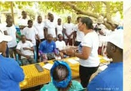
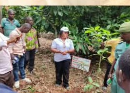
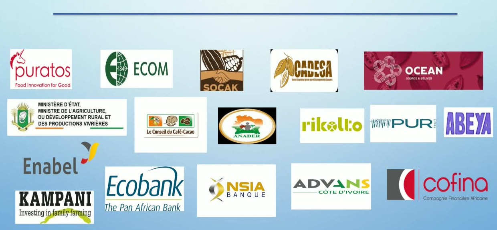

Fine Saveur
Amélioration continue de la qualité des fèves, en lien avec Cacao of Excellence, pour viser un cacao fine saveur reconnu.
Vavoua · Côte d'Ivoire · depuis 2019
SCAMED COOP-CA est une coopérative agricole dirigée par des producteurs et productrices de cacao et de noix de cajou de la région de Vavoua, engagée pour une agriculture responsable, tracée et solidaire.
À propos
À Vavoua, le cacao a toujours été plus qu'une culture : il a nourri des familles entières et financé l'éducation de générations d'enfants. La SCAMED COOP-CA — Société Coopérative Agricole pour la Maîtrise de l'Entraide Durable — a été créée le 10 juillet 2019 pour aller plus loin : ne plus seulement produire la matière première, mais organiser les producteurs pour qu'ils en captent une part de la valeur ajoutée.
Enregistrée sous le n° CI-DAL-01-2019-C-11-08159, la coopérative rassemble aujourd'hui des producteurs et productrices de cacao et de noix de cajou répartis en plusieurs sections, sous la présidence de son Conseil d'Administration.
Être leader de l'innovation en gestion coopérative dans le Haut-Sassandra et le Worodougou.
Assurer un service de qualité, dans un partenariat gagnant-gagnant pour tous.
Être une coopérative lumière, bien structurée de la base jusqu'à la direction, inscrite dans la diversification et visant un fort impact communautaire.
Collaboration · Transparence · Innovation · Résilience.
« SCAMED : pour une entraide plus durable »
| 2019 | 2026 | |
|---|---|---|
| Membres | 117 (6 femmes, 25 jeunes) | 1 663 (160 femmes, 177 jeunes) |
| Sections / localités | 2 / 5 | 6 / 77 |
| Superficie de production | 454,41 ha | 5 518 ha |
| Certifications actives | RA | RA, CacaoTrace, Fairtrade |
| Conseil d'administration | 5 membres, 1 femme | 7 membres, 3 femmes |
| Volume vendu | 68 tonnes | 2 109 tonnes |
| Employés | 3 | 20 |
Le mot de la directrice
« Depuis 2019, la SCAMED COOP-CA a grandi grâce à celles et ceux qui ont choisi de croire en la terre de Vavoua : de 117 à plus de 1 600 membres, de deux à six sections. Cette croissance, nous la devons à un pari simple — donner aux jeunes hommes et aux jeunes femmes de nos communautés les moyens de faire de l'agriculture un métier d'avenir, et non un dernier recours.
À travers nos associations villageoises d'épargne, nos activités génératrices de revenus et notre ferme école, nous accompagnons chaque année davantage de jeunes producteurs et productrices : leur transmettre les gestes de nos aînés, mais aussi les équiper d'outils nouveaux — traçabilité, agroforesterie, gestion coopérative — pour qu'ils cultivent avec fierté et en tirent une véritable autonomie.
Notre ambition est claire : faire de chaque parcelle un lieu où le savoir-faire ivoirien se transmet et se valorise, et faire de chaque coopérateur un acteur de sa propre autosuffisance. C'est ce combat, patient et collectif, que la SCAMED COOP-CA porte chaque jour, pour une entraide plus durable. »
Coulibaly Cathy Florence épouse Kouakou
Présidente du Conseil d'Administration, SCAMED COOP-CA
Nos activités
Coaching en bonne gouvernance, coaching marketing, traçabilité et agroforesterie, et plusieurs projets spéciaux portés avec nos partenaires.
Amélioration continue de la qualité des fèves, en lien avec Cacao of Excellence, pour viser un cacao fine saveur reconnu.

28 associations villageoises d'épargne et de crédit (AVEC) au service de 836 producteurs (302 hommes, 534 femmes) ; 6 AGR collectives et 36 AGR individuelles d'élevage de porcs à Apkonzo, et une ferme école.
Des producteurs formés accompagnent leurs pairs directement dans les plantations pour diffuser les bonnes pratiques agricoles.
Cartographie des parcelles, analyse des polygones et enregistrement individuel de chaque producteur. Engagement zéro déforestation : 1 000 plants avec Rikolto et 60 000 plants avec le projet PUR (Puratos).
Un centre de fermentation financé par l'Union européenne et Puratos, pour une meilleure qualité post-récolte.

Distribution de kits scolaires et d'engrais, remise des clés du château d'eau de Petit-Paris, appui à l'école d'Alloukouassikro et paiement de primes aux producteurs.
Nos produits
Pure Cacao — Granulés de Cacao au Gingembre est un encas artisanal élaboré à partir de fèves de cacao et de gingembre, deux produits cultivés localement. Conditionné en pot de 100 g, ce produit incarne la diversification portée par la coopérative, dirigée par des femmes productrices de la région de Vavoua.
Chaque pot raconte le parcours de femmes qui transforment leur récolte en autonomie économique : le gingembre, que leurs mères utilisaient déjà pour ses vertus, est venu enrichir le cacao d'une note épicée — une rencontre entre le terroir ivoirien et un savoir-faire transmis de génération en génération.
Fèves de cacao, gingembre — aucun additif.
À conserver dans un endroit sec et frais, à l'abri de la lumière et de l'humidité. Bien refermer après ouverture.
Se consomme tel quel, en encas, ou incorporé dans des préparations (yaourts, pâtisseries, infusions).
Vavoua, Côte d'Ivoire — SCAMED COOP-CA, coopérative de femmes.
Le cacao est riche en antioxydants et source de magnésium et de fer ; le gingembre est traditionnellement reconnu pour ses propriétés digestives. Ces informations sont données à titre indicatif et ne constituent pas une allégation de santé au sens réglementaire.
Impact & partenaires
Le projet Cacao Durable de la SCAMED COOP-CA est soutenu par l'État de Côte d'Ivoire, l'Union européenne, et plusieurs partenaires techniques et financiers.

Contact
Producteurs, acheteurs, partenaires techniques ou financiers : notre coopérative est ouverte à toute collaboration au service d'une entraide plus durable.